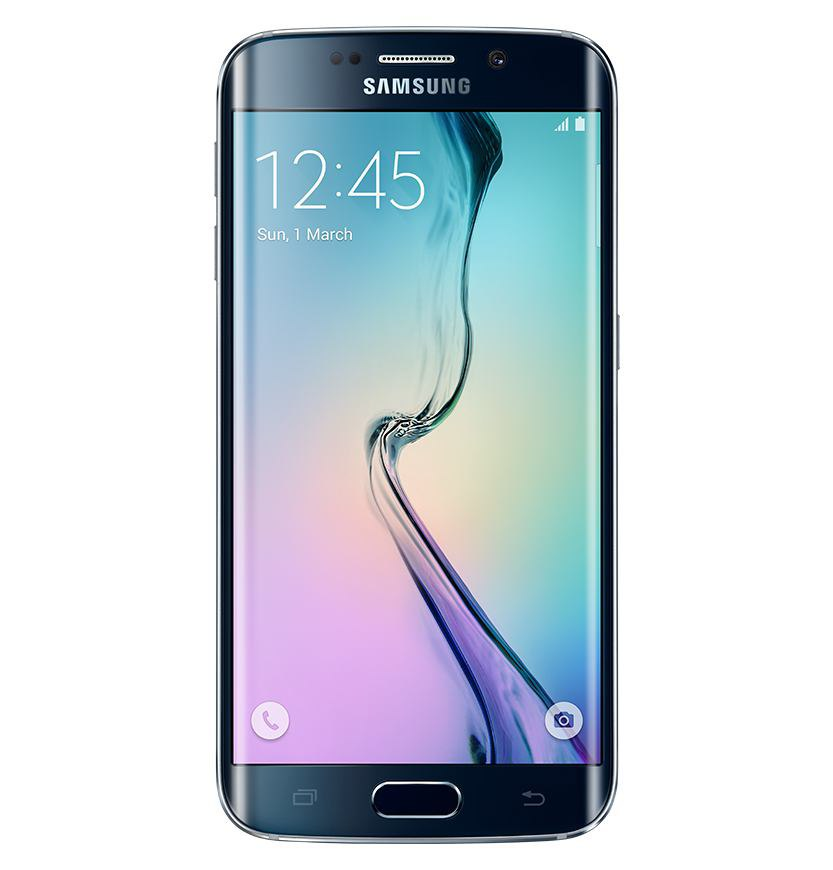

<div class="page" data-page="crop">
    <div class="navbar">
        <div class="navbar-inner">
            <div class="left"><a href="#" class="back link color-white">Close</a></div>
            <div class="center" id="nav-title">Crop testing</div>
        </div>
    </div>

    <div class="page-content">
        <link rel="stylesheet" href="css/jquery.cropbox.css">
        
    </div>
</div>